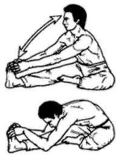

<- back
Next up: Удав заглатывает птицу
Сломанный ветром тростник

Исходное положение: Аналогичное предыдущему упражнению, однако правая нога согнута в колене и касается подошвой левого бедра с внутренней стороны.
На выдохе выполняем наклоны к левой ноге на 8 счетов, чередуя выдох и вдох. (Полностью распрямляться не рекомендуется.) Затем меняем положение ног и выполняем наклоны к правой ноге.
Next up: Удав заглатывает птицу